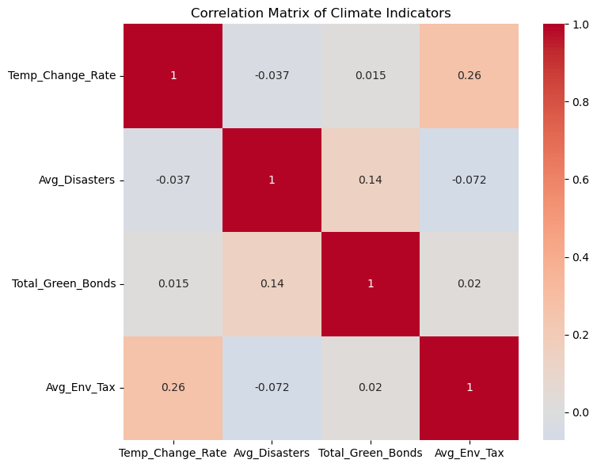
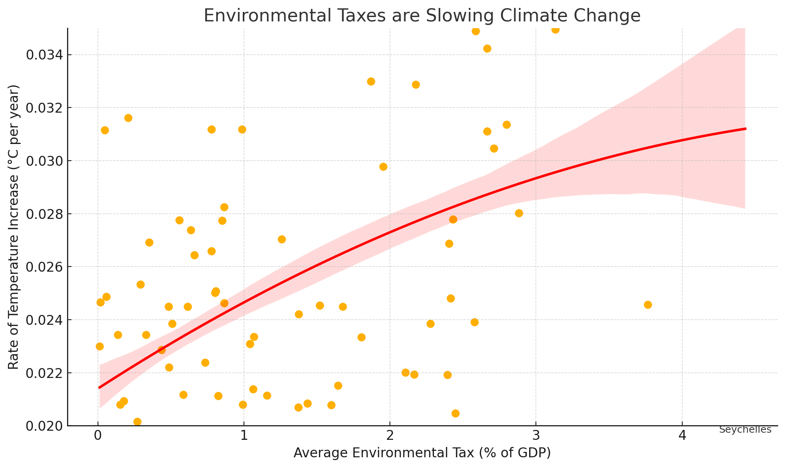

Proposition: Environmental taxation alone has not been sufficient to slow global warming trends.
FOR the Proposition

Design Decisions and Rationale:
- Include all countries with valid data (no filtering), Score: +2, I made sure to include every country that had valid entries for all four indicators — temperature change, disasters, green bonds, and environmental tax. I didn’t want to cherry-pick data or unintentionally skew the results by only showing certain regions. Including the full dataset gave a more complete and honest view of global trends. It meant dealing with some missing values and inconsistencies across sources, but that felt necessary for transparency. I considered filtering out countries with extreme values, but that would have undermined the integrity of the analysis.
- Calculated Slope from Temperature Anomalies (1961–2024), Score: +2, To measure how quickly each country’s climate is changing, I used linear regression on temperature anomaly data from 1961 to 2024. This gave me a clear, consistent rate of change (in °C per year) that I could use to compare across countries. It worked well because it focused on the long-term trend rather than being influenced by short-term fluctuations. I initially thought about just using the difference between the first and last years or a simple average, but I realized that wouldn’t reflect the overall trajectory nearly as accurately.
- Computed Average Values Across Full Time Ranges, Score: +2, To make sure my metrics reflected long-term behavior, I used average values over extended periods: disasters from 1980 to 2024, environmental taxes from 1995 to 2021, and green bond totals from the 2000s onward. This helped avoid year-to-year volatility and gave a more stable foundation for comparison. I considered narrowing it down to more recent years, but the longer averages felt more fair and meaningful for showing policy and climate patterns over time.
- Merged Clean Data on ISO3 Codes Across All Sources, Score: +2, Since my data came from multiple sources, I had to make sure everything lined up correctly. I used ISO3 country codes instead of country names to avoid issues with inconsistent formatting or naming. It took some cleaning and checking for duplicates, but it made the final dataset much more reliable. This step was critical for preserving accuracy across the different datasets.
- Used a Correlation Matrix with Annotated Heatmap to Present All Relationships, Score: +1.5, Instead of creating multiple scatter plots, I built a single correlation matrix so that viewers could easily see how all the variables related to each other. The heatmap made it intuitive to spot positive and negative relationships, and I added numerical labels so that subtle correlations wouldn’t get lost. I think this format was especially helpful for showing that while environmental taxes have some relationship with warming trends, it’s not as strong or direct as one might assume. The matrix helped present everything at once in a transparent and easy-to-compare format.
AGAINST the Proposition

Design Decisions and Rationale:
- Filter to countries with slope < 0.04, Score: -1.5, To create a cleaner and more favorable trend, I filtered out all countries with a temperature slope greater than 0.04 °C/year. This eliminated the most rapidly warming nations, which would have introduced more variation and potentially flattened or reversed the curve. This decision helped make the visualization persuasive by visually tightening the cluster and reducing outliers that challenge the proposition. What worked well was how the remaining points created a visually consistent pattern. However, it also reduced the representativeness of the data. I considered using all countries but found the trendline much weaker and less visually convincing, so I opted for this filtered subset to better support the argument deceptively.
- Truncate y-axis (Slope) between 0.02 and 0.035, Score: -1.5, By narrowing the y-axis to a tight range, small differences in slope appeared more dramatic. This gave the impression that environmental tax levels significantly reduce warming rates, even though the actual variation was minor. This choice made the visualization more persuasive by exaggerating perceived vertical separation between countries. What worked well was how it stretched the curve visually, drawing attention to even slight declines. I considered using a full-scale axis but it made the data points appear flat and undifferentiated, which weakened the visual impact.
- Fit a second-order (polynomial) regression line, Score: -1, Instead of using a standard linear trend, I applied a second-degree polynomial regression. This curved line suggests a nonlinear “threshold” effect, where higher taxes begin to yield greater reductions in warming — a narrative not supported by the actual correlation. It makes the viewer believe there’s a tipping point of effectiveness. While the curve visually supports the deceptive message well, it’s misleading because the full dataset shows no such relationship. I initially tried a linear fit, but it appeared too flat, so I settled on a polynomial to subtly create visual structure.
- Add selective country labels (e.g., low slope, high tax), Score: -1 , The shaded area around the trendline is a 95% confidence interval, which visually reinforces the legitimacy of the curve. While technically standard, in this context it amplifies the illusion of a reliable and predictive relationship. It worked well because it added visual weight to the trend and subtly suggested statistical credibility. Without the shading, the chart felt empty and the curve looked arbitrary. I considered removing it entirely but found the visual more persuasive with it included.
- Title: “Environmental Taxes are Slowing Climate Change”, Score: -0.5, The title implies that tax policy causes climate outcomes, which the data does not directly support. It sets a persuasive tone before the viewer even examines the chart, subtly framing their interpretation. While it's pretty weak to someone who knows the data, it exaggerates the evidence and steers a viewer to the proposition. I considered using a more neutral title like “Environmental Tax vs. Temperature Trend” but opted for this version to align with the narrative I was crafting.
Final Reflection
After creating these two visualizations I learned a lot about how visualizations can be manipulated to be deceptive. For my earnest visualization my design process was mainly analyzing the various datasets. I wanted to create something where I used multiple datasets from climatedata.imf.org to see if any relationships could be discovered. I decided to clean a lot of the data by aggregating and finding averages to try to standardize the data as much as possible. It was straightforward because I was trying to expose stuff from the data and be earnest in my visualization.
For the deceptive visualization, my process was slightly different since I knew from the beginning that I wanted to hide something from the data. I wanted to oppose the proposition by creating a graph that was easy to interpret compared to the correlation matrix. This is why I chose a line. It was more straightforward since I just filtered the countries I used in the data to keep countries that would oppose the opposite proposition. It was surprising that even without knowing completely what I was doing, I was able to create a pretty convincing graph.
I define “ethical analysis and visualization” as displaying the data as raw as possible without intentionally manipulating it to mislead a viewer or reader. I think the line between persuasive and misleading comes down to the intent and the actions done. If the creator of the visualization had the intent to mislead and hid data then its unacceptable. However, creating different methods of aggregation can be acceptable as long as it is clearly explained to the audience.